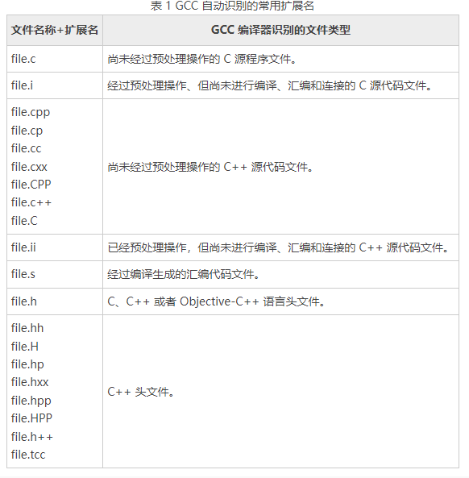
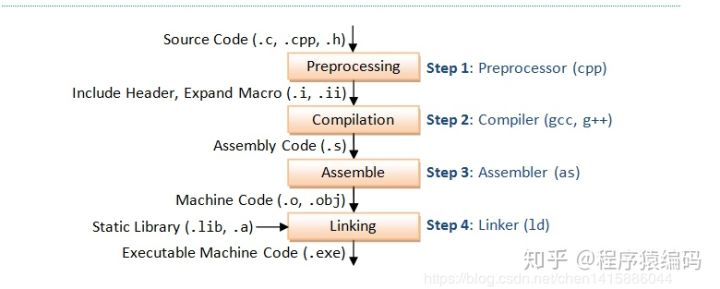

C++ | gcc的使用
前言
GCC简介
GCC（GNU Compiler Collection），即 GNU 编译器套件。它不仅可以用来编译 C 语言程序，还可以处理 C++、Go、Objective -C 等多种编译语言编写的程序。
可以通过如下命令，查看系统上的 GCC 版本号。如果不显示版本号，说明目前还未安装 GCC 编译器。
1 | $ gcc -version |
gcc 与 g++ 的区别
gcc 和 g++ 都可以调用 GCC 编译器为我们编译文件。gcc 可以用来编译 C++ 程序，同样 g++ 也可以用来编译 C 语言程序。但它们还是有不同的：
-
gcc 可以根据文件后缀名，自行判断出当前程序的所用的编程语言，然后采用对应的方式进行编译。但是 g++ 不论文件后缀名是什么，一律按照 C++ 的方式编译该文件。
不要觉得 C++ 兼容 C，所以可以无所顾忌地用 g++ 编译 C 语言程序。严格来说，C++ 标准和 C 语言标准的语法要求是有区别的。
-
很多 C++ 程序都会调用某些标准库中现有的函数或者类对象，而单纯的 gcc 命令是无法自动链接这些标准库文件的。
如果想使用 gcc 指令来编译执行 C++ 程序，需要在使用 gcc 指令时，手动为其添加 -lstdc++ -shared-libgcc 选项，表示 gcc 在编译 C++ 程序时可以链接必要的 C++ 标准库。如下
1
$ gcc -xc++ demo.cpp -lstdc++ -shared-libgcc
所以对于 C 语言程序的编译，我们应该使用 gcc 指令，而编译 C++ 程序则推荐使用 g++ 指令。
GCC 自动识别的文件扩展名

GCC 可识别的文件扩展名不止上表这些。如果当前文件的扩展名和上表不符，只需要借助 -x 选项（小写）指明当前文件的类型即可。
例如一个用 C 语言写的，但是没有后缀名的源文件 demo，可以用如下的方式编译，指明代码所用的语言：
1 | gcc -xc demo |
GCC -std 编译标准
C 语言和 C++ 有多个版本，不同版本支持的语法并不同。不同版本的 GCC 编译器，默认使用的标准版本也不尽相同。因此对于编译 C、C++ 程序来说，借助 -std 选项即可手动控制 GCC 编译程序时所使用的编译标准。使用方式如下：
1 | $ gcc -std=编译标准 # c语言编译 |
GCC 编译 C/C++ 程序
GCC 编译，可以直接一步完成，但初学者可以分步完成，了解内部编译过程。
一步完成
以 C 语言程序为例，使用如下指令可快速编译，获得对应的可执行程序。
1 | $ gcc demo.c -o demo.exe |
按下 Enter 回车键，由此 GCC 编译器就帮我们在当前目录下生成了对应的可执行文件，该文件的名称为 demo.exe。
默认情况下，gcc 指令会一气呵成，直接将源代码转变为可执行代码，且不会保留产生的中间文件。
-o 选项，用于指定要生成的文件名
分步完成
无论是 C 还是 C++ 程序，其从源代码转变为可执行代码的过程，具体可分为 4 个过程，分别为预处理（Preprocessing）、编译（Compilation）、汇编（Assembly）和链接（Linking）。

预处理，生成预编译文件
通过为 gcc 指令添加 -E 选项，即可控制 GCC 编译器仅对源代码做预处理操作。
预处理操作，主要是进行头文件展开，宏替换，删除注释等工作
默认情况下 gcc -E 指令只会将预处理操作的结果输出到屏幕上，并不会自动保存到某个文件。因此该指令往往会和 -o 选项连用，将结果导入到指令的文件中。
1 | $ gcc -E demo.c -o demo.i |
Linux 系统中通常用 “.i” 作为 C 语言程序预处理后所得文件的后缀名。
编译，生成汇编代码文件
通过给 gcc 指令添加 -S 选项，即可令 GCC 编译器仅将指定文件加工至编译阶段【这也就意味着，gcc -S 指令可以操作预处理后的 .i 文件，也可以操作源代码文件】，并生成对应的汇编代码文件。
这个阶段编译器主要做词法分析、语法分析、语义分析等，在检查无错误后后，把代码翻译成汇编语言。
可以通过如下指令，对预处理文件进行编译：
1 | $ gcc -S demo.i -o demo.s |
Linux 系统中通常用 “.s” 作为 C 语言程序汇编代码文件的后缀名。
汇编，生成目标文件
通过为 gcc 指令添加 -c 选项（注意是小写字母 c），即可让 GCC 编译器将指定文件加工至汇编阶段【这也就意味着，gcc -c 指令并非只能用于加工 .s 文件】，并生成相应的目标文件。所谓目标文件，其本质为二进制文件，但由于尚未经过链接操作，所以无法直接运行。
这个阶段就是将之前生成的汇编代码文件做进一步转换，生成对应的机器指令。
可以通过如下指令，对汇编代码文件进行编译：
1 | $ gcc -c demo.s -o demo.o |
Linux 系统中通常用 “.o” 作为 C 语言程序目标文件的后缀名。
链接，生成可执行文件
目标文件已经是二进制文件，与可执行文件的组织形式类似，只是有些函数和全局变量的地址还未找到，因此还无法执行。链接的作用就是找到这些目标地址，将所有的目标文件组织成一个可以执行的二进制文件。
阶段要完成的工作，就是将同一项目中各源文件生成的目标文件以及程序中用到的库文件整合为一个可执行文件。
可以使用如下指令执行链接操作，指令如下：
1 | $ gcc demo.o -o demo.exe |
gcc 会根据所给文件的后缀名 .o，自行判断出此类文件为目标文件，仅需要进行链接操作。
手动添加链接库
当使用 GCC 编译和链接程序时，GCC 默认会链接 libc.a 或者 libc.so【标准库】，但是对于其他的库（例如非标准库、第三方库等），就需要手动添加。CC 的 -l 选项（小写的 L）可以让我们手动添加链接库。
以链接数学库 libm.a 为例。如果不手动链接该库的话，将无法成功编译使用了该库函数的文件。比如 main.c 中包含了使用了函数 cos()，则使用如下指令进行编译：
1 | $ gcc main.c -o main.out -lm |
数学库的文件名是 libm.a。前缀
lib和后缀.a是标准的，m是基本名称，GCC 会在-l选项后紧跟着的基本名称的基础上自动添加这些前缀、后缀，本例中，基本名称为 m。
链接其他目录中的库
通常，GCC 会自动在标准库目录中搜索文件，例如 /usr/lib，如果想链接其它目录中的库，就得特别指明。有两种方式可以链接在 GCC 搜索路径以外的链接库：
-
使用
-L选项，为 GCC 增加另一个搜索链接库的目录：1
$ gcc main.c -o main.out -L/usr/lib -lm
-
把包括所需链接库的目录加到环境变量 LIBRARYPATH 中。
GCC 指定头文件
GCC 在编译时，会按如下顺序寻找需要的头文件：
- 首先，从选项
-I指定的目录搜索头文件 - 然后，搜索 gcc 的环境变量 C_INCLUDE_PATH，CPLUS_INCLUDE_PATH，finOBJC_INCLUDE_PATH 设置的目录
- 再搜索系统目录 /usr/include 和 /usr/local/include
- 最后，搜索gcc的一系列自带目录（如/usr/include/c++/4.8.5）
#include <>直接到系统指定的某些目录中去找某些头文件。
#include “”先到源文件所在文件夹去找，然后再到系统指定的某些目录中去找某些头文件。
gcc指令一次处理多个文件
一条 gcc（g++）指令往往可以一次性处理多个文件。
举个例子，一个拥有 2 个源文件的 C 语言项目，myfun.c 文件用于存储一些功能函数，以方便直接在 main.c 文件中调用。可以使用如下指令，直接编译多个文件：
1 | $ gcc myfun.c main.c -o main.exe |